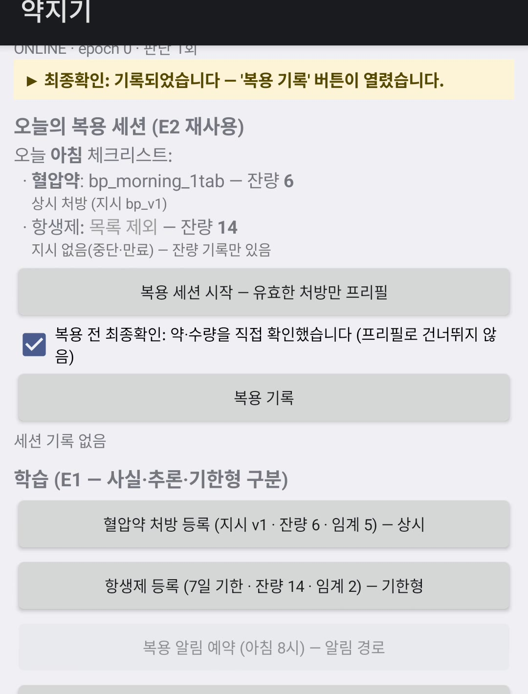
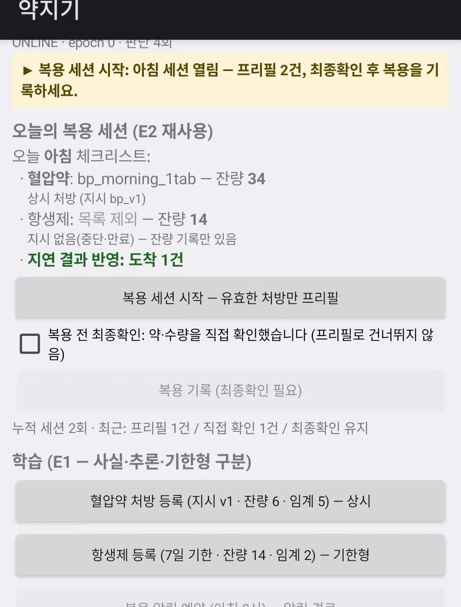
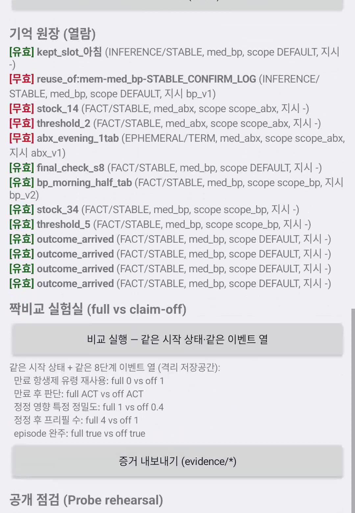

대상 사용자. 혼자 사시는 71세 어르신입니다. 가상의 인물입니다. 이분은 계속 먹는 혈압약과 이번 주만 먹는 항생제를 함께 드십니다. 그래서 매일 아침저녁으로 오늘 무슨 약을 몇 알 먹는지, 남은 약이 며칠치인지 확인해야 합니다. 잊어도 안 되고, 헷갈려도 안 됩니다. 요즘은 어르신들도 스마트폰을 쓰십니다. 그래서 폰이 이 확인을 대신 기억해 주게 하자는 것이 이 앱의 출발점입니다.
그런데 단순한 알림 앱이나 메모 앱을 오래 쓰면, 세 가지 순간에 무너집니다.
어제 목록을 오늘 또 그대로 보여줍니다. 다 먹고 끝난 항생제가 계속 나타나고, 바뀌기 전 처방이 계속 보입니다.
확인하는 도중에 앱이 꺼지면 기록이 사라집니다. 같은 기록이 두 번 적히기도 합니다.
처방이 바뀌거나 약을 끊은 날에도 옛날 내용을 그대로 보여줍니다.
세 문제의 뿌리는 하나입니다. 지금도 맞는 기억이 무엇인지 가려내고, 낡은 부분만 고치면 됩니다.
아직 맞는 처방 기억만 골라 오늘 목록을 미리 채워 줍니다. 매일 아침 처음부터 다시 입력할 필요가 없습니다.
끝난 약, 바뀌기 전 처방, 끊은 약은 목록에서 저절로 빠집니다. 잘못된 재사용은 0건이 목표입니다. 만약 생기면 기록에 남기고, 그 부분만 되돌립니다.
이 둘은 서로 다른 기능이 아니라 한 장치의 양면입니다. 이 기억을 지금도 믿어도 되는지 따지는 장부 하나가, 채울 것과 뺄 것을 같이 정합니다. 그리고 아무리 자동이라도 먹기 전 마지막 확인은 항상 사람이 합니다. 그 확인도 기록으로 남습니다.
처방을 등록합니다. 무슨 약을 언제까지 몇 알 먹는지, 남은 개수까지 적습니다.
맞는 약만 목록에 미리 채워 줍니다. 마지막 확인을 하고 복용을 기록하면 잔량이 하나 줄어듭니다.
약 다시 받기 신청서가 만들어집니다. 승인하면 며칠 뒤 도착해 잔량에 더해집니다.
처방 변경이나 복용 중단이 오면, 영향받은 기억만 고칩니다.
기억마다 이름표를 붙여 적습니다. 혈압약은 계속, 항생제는 이번 주까지, 복용 시간대는 기록에서 나온 짐작. 언제까지 유효한지, 어느 지시에서 나왔는지도 함께 적습니다.
다음 확인 때 아직 맞는 기억만 목록에 미리 채웁니다. 기록할 때마다 잔량이 줄고, 모자라면 다시 받기 절차가 시작됩니다. 승인한 약은 며칠 뒤 도착해 다음 판단을 바꿉니다.
처방 변경, 복용 중단, 권한 회수, 인터넷 끊김이 오면 옛 방식을 고집하지 않습니다. 묻거나, 기다리거나, 멈춥니다. 이유도 함께 남깁니다.
영향받은 기억만 되돌립니다. 항생제를 끊어도 혈압약 기록은 그대로입니다. 전체 초기화가 아니라 부분만 고칩니다.
| 이름표 | 계속 쓰는 사실인지, 이번만인지, 기록에서 나온 짐작인지 |
|---|---|
| 믿어도 되는 조건 | 그 약의 지시가 최신인가. 기한이 지나지 않았는가. 끊지 않았는가. 권한이 있는가. |
| 출처 | 어느 사건에서 생긴 기억인지. 고칠 때 이 연결선을 따라갑니다. |
| 지운 흔적 | 지우면 내용은 없어지고, 지웠다는 기록만 남습니다. 지운 내용은 되살아나지 않습니다. |
이 세 번의 검문이 곧 이 앱의 안전장치입니다. 화면의 목록 채우기도 똑같은 판정을 씁니다. 화면 따로, 검증 따로가 될 수 없습니다.
이 장치의 효과는 믿어 달라는 말이 아니라, 실험으로 보여 드립니다.

① 어떤 버튼을 눌러도 화면 위쪽에 방금 누른 버튼과 그 결과가 바로 표시됩니다. 마지막 확인에 체크해야 복용 기록 버튼이 열립니다.

② 약 다시 받기를 승인하고 사흘이 지나면 잔량이 4에서 34로 저절로 반영됩니다. 늦게 도착한 결과가 다음 판단을 바꿉니다.

③ 6쪽의 유통기한 장부를 화면으로 펼친 기억 장부입니다. 처방 변경과 중단 뒤에 무엇이 유효하고 무엇이 무효가 됐는지 색으로 바로 구분됩니다.
흐름. 처방을 등록하고, 확인과 기록으로 잔량이 6에서 5가 됩니다. 한 번 더 기록해 4가 되면 기준 아래로 내려가 다시 받기 신청서가 저절로 생깁니다. 승인하고 사흘 뒤 도착해 34가 됩니다. 이어서 처방 변경, 항생제 중단, 안전장치 비교, 증거 내보내기까지 확인합니다.
모든 버튼이 표준 형식의 사건으로 바뀌어 한 창구로 들어갑니다.
기억 장부와 행동 장부를 들고, 13가지 사건을 정해진 규칙으로 처리합니다. 세 번의 검문도 여기서 이뤄집니다.
대회의 보호된 통로로 들어와 완전히 같은 함수를 부릅니다. 검증 연결 부품은 대회가 준 원본 그대로입니다.
기억 장부는 앱이 아는 것들의 목록입니다. 무슨 약을 언제까지 몇 알 먹는지, 잔량이 몇 개인지 같은 사실들이 적혀 있습니다. 6쪽에서 보신 유통기한 붙인 장부가 바로 이것입니다.
행동 장부는 앱이 한 일들의 목록입니다. 약 다시 받기 신청처럼 결과가 따르는 일이, 하겠다 단계인지 됐다 단계인지와 함께 적혀 있습니다. 그래서 같은 일을 두 번 하지 않고, 끝났다고 꾸미지도 못합니다.
심사는 화면이 아니라 별도의 시험 통로로 이뤄집니다. 그래서 시험 통로에만 잘 대답하는 앱을 따로 꾸미는 부정이 이론상 가능하고, 저희는 그렇지 않다는 것을 실험으로 보였습니다.
13단계란 대회가 공개한 표준 시험입니다. 새로 시작해 배우고, 판단하고, 고치고, 지우고, 인터넷을 끊고, 앱을 강제로 껐다 켜고, 같은 요청을 겹쳐 보내고, 옛 사건을 늦게 도착시키는 것까지, 앱이 겪을 수 있는 일 열세 가지를 순서대로 겪게 합니다.
이 13단계를 화면 조작으로 한 번, 공식 검증 도구로 한 번 돌렸더니, 강제 종료 전 여덟 단계는 상태의 지문까지 완전히 같았고, 판단과 선택은 열세 단계 전부 같았습니다. 지문이 같으려면 상태가 바이트까지 같아야 하고, 상태가 같으려면 같은 규칙이 돌아야 합니다. 화면용과 시험용이 다른 코드였다면 이럴 수 없습니다. 남은 차이는 재시작 횟수 하나뿐인데, 공식 도구만 실제로 앱을 껐다 켰기 때문입니다.
여기서 안전장치란, 6쪽에서 보신 세 번의 검문입니다. 쓸 때는 지시가 최신인지, 기한이 지나지 않았는지, 끊거나 권한이 꺼지지 않았는지 확인해 통과한 기억만 쓰고, 바뀔 때는 새 지시와 어긋나는 기억만 골라 효력을 없애고, 고칠 때는 딸린 것까지만 정리합니다. 끄면 이 세 검문 없이 살아있는 기억을 통째로 다시 씁니다. 그래서 아래 표의 차이가 생깁니다.
| 같은 사건 8개를 같은 순서로 겪게 한 결과 | 안전장치 켬 | 안전장치 끔 |
|---|---|---|
| 끝난 항생제가 목록에 다시 나타남 | 0번 | 1번 |
| 처방 변경 때 영향 범위를 정확히 짚음 | 정확도 1.0 | 정확도 0.4 |
| 변경 후에도 목록이 살아 있음 | 4건 유지 | 1건만 남음 |
| 끝까지 완주 | 완주 | 완주 |
끈 쪽도 고장 난 앱이 아닙니다. 직전 상태를 통째로 다시 쓰고, 충돌하면 전부 다시 확인하는 방식으로 끝까지 완주합니다. 차이는 안전장치 하나뿐입니다. 그래서 이 표의 차이는 전부 안전장치의 효과입니다.
| 사례 1. 두 번째 약 도착이 사라졌다 | 사례 2. 다시 등록한 약이 막혔다 | 사례 3. 진행 중인 일을 끝났다고 답했다 | |
|---|---|---|---|
| 증상 | 약을 두 번째로 받으면, 도착이 잔량에 반영되지 않음 | 약을 지웠다가 다시 등록하면, 그 약의 새 도착이 영영 반영되지 않음 | 결과가 오기 전에 같은 요청이 겹치면 끝났다고 답함. 같은 화면의 장부에는 진행 중이라고 적혀 있음 |
| 원인 | 도착 기록의 이름이 매번 같았음. 같은 이름을 보고 이미 처리한 도착으로 오인 | 지운 약은 되살아나면 안 된다는 방어가 너무 넓었음. 몰래 되살아나는 것과 사용자의 재등록을 구분하지 않음 | 겹친 요청에 새 일을 만들지 않는 것까지는 맞았지만, 답하는 말을 장부 상태와 맞추지 않음 |
| 어떻게 찾았나 |
여러 달 쓰는 상황을 머릿속이 아니라 실행으로 흉내 냄. 두 번 받는 흐름을 넣자마자 드러남 | 출제자의 눈으로 우리 규칙을 일부러 무너뜨리는 순서를 만들어 코드를 한 단계씩 따라감. 삭제, 재등록, 새 도착 순서에서 걸림 | 앞선 점검을 전혀 모르는 새로운 눈으로 코드 전체를 처음부터 다시 읽다가, 말과 장부가 어긋나는 지점을 발견 |
| 고침 | 도착 기록 이름에 회차를 넣어 매번 다르게 만듦 | 방어가 불필요함을 증명하고 없앰. 지울 때 대기 중인 도착을 전부 취소하므로, 지운 뒤 남는 도착은 모두 재등록 뒤의 정당한 것 | 장부에 적힌 그대로 답하게 함. 진행 중, 완료, 취소 세 갈래로 |
| 재발 방지 |
두 번 받는 상황을 자동 테스트로 고정. 비공개 시나리오 실행 팩에도 넣어 공식 도구로 재확인 | 삭제, 재등록, 도착까지 이어지는 흐름을 자동 테스트로 고정. 경계도 문서에 적음 | 세 갈래 답을 각각 자동 테스트로 고정 |
세 실패의 공통점이 있습니다. 처음 며칠은 멀쩡하고, 오래 쓰거나 상황이 겹쳐야 드러난다는 점입니다. 긴 시간을 견디는 앱이라는 이 대회의 주제와 정확히 같은 지점이라, 저희는 이 셋을 가장 값진 발견으로 꼽습니다.
스스로 여섯 번 점검했습니다. 라운드마다 다른 눈을 썼습니다. 처음 읽는 눈, 출제자의 눈, 고친 곳만 다시 보는 눈. 같은 눈으로 두 번 보면 같은 것만 보이기 때문입니다.
보고된 문제마다 코드에서 재확인해 진짜만 고쳤습니다. 과장된 발견과 억지 발견은 근거를 적고 버렸습니다.
한 줄을 고쳐도 자동 테스트 43개, 공식 검증 도구 완주, 화면 검사 35개를 전부 다시 돌렸습니다. 예외는 한 번도 없었습니다. 고친 곳이 새 문제를 만드는 것까지 잡기 위해서입니다.
작은 화면 지연처럼 고치는 위험이 더 큰 것은 남기고, 문서에 적었습니다. 멈출 곳을 아는 것도 개선 방식이라고 생각합니다.
여섯 라운드 동안 찾은 문제 수는 33, 16, 46, 21, 21, 그리고 마지막에 7건. 마지막 7건은 전부 가벼워서 고칠 것이 없었습니다.
문제가 더 나오지 않을 때까지 반복했고, 그 수렴을 확인한 뒤에 제출했습니다.
① 처방전을 사진이나 QR로 찍어 등록. 찍은 처방전에서 글자를 읽어 무슨 약인지 알아내고 바로 등록해 주면, 버튼 입력이 어려운 어르신도 사진 한 장으로 시작할 수 있습니다. 왼쪽의 첫 번째 한계를 정면으로 푸는 단계입니다.
② 시연 버튼을 실제 입력으로.
| 사흘 뒤 버튼 | 실제 시간, 약국 알림 |
| 인터넷 전환 버튼 | 실제 연결 상태 |
| 처방 변경 버튼 | 새 처방전 입력 |
구조는 이미 이 교체를 전제로 설계했습니다. 이후 여러 약 확장과 보호자 공유를 계획하고 있습니다.